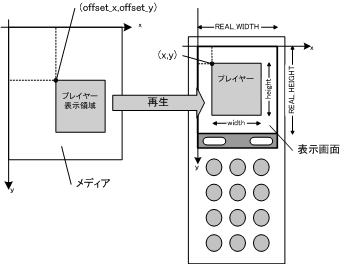
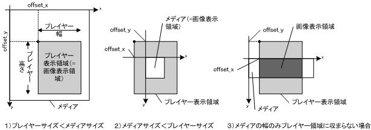

|
||||||||
| フレームあり フレームなし | ||||||||
| 概要: 内部クラス | フィールド | コンストラクタ | メソッド | 詳細: フィールド | コンストラクタ | メソッド | |||||||
java.lang.Object | +--com.jblend.media.MediaPlayer
このクラスはすべてのメディアプレイヤーの基底となる抽象クラスです。
メディアデータ、およびメディアリソースを総称してメディアと呼びます。 また、MediaPlayerクラスのインスタンスをメディアプレイヤーと呼びます。
メディアプレイヤークラスはメディア種別ごとに定義されます。個々のメディアプレイヤーは必ずMediaPlayerクラスを継承して作成します。
Javaアプリケーションは再生するメディアに対応したプレイヤークラスのインスタンスを生成し、メディアの設定、再生、一時停止、再開などのためのメソッドで使用します。メディアの再生開始、一時停止、再生終了に同期したイベントを待ち受けるためには、MediaPlayerListenerオブジェクトを登録します。
メディアプレイヤーはMIDPのCanvasやScreeenなどの画面表示用クラスとは独立に動作します。メディアプレイヤーを生成し再生させると、「現在のDisplayable」とは関係なくメディアの再生画面が表示されます。たとえばCanvasの派生クラスを画面表示している状態でメディアプレイヤーを再生させると、Canvasの派生クラスで描画した画面はメディアの再生画面で上書きされます。逆にメディアプレイヤーを再生開始したのちに、何らかのCanvas派生クラスでの画面描画を行うとメディアプレイヤーの表示領域は上書きされます。メディアが動画であればメディアプレイヤーはさらにその上に動画の画像を上書きします。
したがって、メディアプレイヤーの表示領域以外に何らかのグラフィックスを描画するには、プログラマがメディアプレイヤーの表示領域とCanvas継承クラスでの描画内容について画面上の位置関係を考慮しなくてはなりません。
また、Canvasはメディアプレイヤーの再生とは関係なく、低レベルイベント（キーイベント）やコマンドイベントをMIDletに通知します。メディアプレイヤーを再生させているときに、ユーザ操作によりメニュー画面が表示されるときには、メディアプレイヤーの再生がメニュー表示を阻害しないように配慮しなくてはなりません。具体的には、たとえばCanvasのhideNotify()およびshowNotify()の実装において、メディアプレイヤーの一時停止または再開などの制御が必要となります。
MIDletはメディアプレイヤークラス（MediaPlayer継承クラス）とメディアデータクラス（MediaData継承クラス）のオブジェクトを明示的に生成する必要があります。たとえば再生するメディアデータフォーマットがSMAFであれば、SmafDataオブジェクトとSmafPlayerオブジェクトをコンストラクタで生成します。生成時にはメディアのデータを指定します。MediaData継承クラスのそれぞれのコンストラクタには、メディアのデータをバイト配列で与えるものとリソースファイル名で指定するものの2種類が用意されています。
メディアプレイヤーを生成したら、
setData()メソッドでメディアデータを設定します。setData()はバイト配列を設定するものと、メディアの種類に対応したオブジェクトを設定するものの2種類が用意されています。たとえば、SmafPlayerにはSmafDataオブジェクトをパラメータとして指定するsetData()が用意されています。
画像を含むメディアのメディアデータクラスのオブジェクトは、MediaImageOperatorインタフェースの
getWidth()およびgetHeight()メソッドでそれぞれメディアの幅と高さを取得可能です。また、画像を含むメディアのメディアプレイヤーにメディアデータが設定されていると、getMediaWidth()およびgetMediaHeight()でそれぞれメディアの幅と高さを取得可能です。メディアが音声データのみからなり、画像データを含んでいない場合は、サイズ取得のためのメソッドは存在しません。再生時は画面上では何も表示されず、音声だけが再生されることになります。
画像を表示するメディアプレイヤーは、ソフトキー領域を除いた端末の表示画面の任意の領域に配置できます。MediaPlayerクラスのフィールド値REAL_WIDTH、REAL_HEIGHT は、それぞれこの表示領域の幅と高さを表します。
メディアを表示画面にどのように表示するかをMediaImageOperatorインタフェースの
setOrigin()とsetBounds()で設定します。setOrigin()ではパラメータoffset_xとoffset_yでメディアの左上を原点としたプレイヤー表示領域の切り出し位置を指定します。setBounds()では表示画面中でのプレイヤー表示領域（位置：x,y、幅と高さ：width, height）を指定します 。図1にこの様子を示します。図1. メディアプレイヤー表示位置設定
メディアのサイズは表示画面サイズに対して大きいことも小さいこともあります。図2にメディアのサイズとプレイヤーのサイズとの大小関係に応じた3種類の設定例を示します。
図2. メディアプレイヤー切り出し位置設定
メディアのサイズがプレイヤー表示領域より大きな場合、メディアの部分矩形領域を表示するように指定できます。図の例ではoffset_xおよびoffset_yはともに正の値で指定します。
メディアのサイズがプレイヤー表示領域より小さい場合、メディア全体を表示画面の中に配置できます。図の例ではoffset_xおよびoffset_yはともに負の値で指定します。
メディアの幅のみがプレイヤー表示領域の幅より大きい場合、図示したようにメディア中の矩形領域を表示する領域として指定できます。図の例ではoffset_xの値は正、offset_yの値は負の値で指定します。メディアの高さのみがプレイヤー表示領域の高さより大きい場合も同様に指定できます。
メディアの配置位置は任意です。図中の2）のような場合でも、メディアの全領域がプレイヤー領域に入るように指定しなくても問題ありません。プレイヤー領域中にあるメディアの部分が表示されます。
プレイヤー表示領域の切り出し位置、および表示画面中でのプレイヤー表示領域の設定値はメディアプレイヤーのメソッドで取得可能です。それぞれのパラメータに対する取得メソッドを表1に示します。
表1. 表示位置取得メソッド パラメータ メソッド プレイヤー表示領域の切り出し位置 offset_x getOriginX()プレイヤー表示領域の切り出し位置 offset_y getOriginY()プレイヤー表示領域の表示画面中での位置 x getX()プレイヤー表示領域の表示画面中での位置 ｙ getY()プレイヤー表示領域の表示画面中での幅 width getWidth()プレイヤー表示領域の表示画面中での高さ height getHeight()MIDletはデータの内部構造に関して理解する必要はありませんが、MediaPlayerオブジェクトがそのメディアデータを再生できない可能性を考慮する必要があります。再生できない場合は、メディアを設定した時点に例外がスローされます。
メディアプレイヤーにメディアデータが設定されると、メディアの再生が可能な状態になります。ただし、この状態ではメディアはまだ表示されていません。メディアプレイヤーの
play()メソッドを呼び出すと、再生が開始されます。メディア中に画像データが埋め込まれている場合は、画面上に表示されます。play()メソッドでは下記のバージョンが用意されています。
- 一回再生する
- 繰り返し回数を指定して再生する
- 無限に再生を繰り返す
繰り返しを指定した場合は、メディアプレイヤーは、所定の再生を終了するか、停止、または一時停止を指示されるまで再生を繰り返します。ただし、メディアが静止画であった場合は繰り返しを要求しても一度だけの再生となります。
停止は
stop()メソッドで、一時停止はpause()メソッドで行います。 再生中もsetOrigin()、およびsetBounds()で表示位置関連の変更が可能です。
再生中のメディアプレイヤーに対して、
pause()メソッドで一時停止させることができます。再開は、resume()メソッドで行います。 一時停止中のメディアプレイヤーを停止するにはstop()メソッドを呼び出します。
再生中のメディアプレイヤーに何らかのエラーが発生した場合、メディアプレイヤーはイベントを発生してエラー状態に遷移します。MediaPlayerListener（後述）によってイベントを検知して、かつ
getState()メソッドによって状態を把握するようにしてください。そして、エラー状態に遷移したことを検出した場合はstop()メソッドによってエラー状態を解消する必要があります。エラー状態を解消すると、メディアプレイヤーは停止状態になり、別のメディアデータを設定するなどの操作が可能になります。
注意事項：
MediaPlayerListenerは、メディアプレイヤーが発生するイベントを待ち受けるリスナを実装するためのインタフェースです。MediaPlayerListenerを実装したリスナは、メディアプレイヤークラスのaddMediaPlayerListener()メソッドでメディアプレイヤーに登録します。MediaPlayerListenerリスナのメソッドは下記のように呼び出されます。
playerRepeated()メソッドが呼び出されます
playerStateChanged()メソッドが呼び出されます。停止には、エラー発生による停止も含みます。
MediaPlayerListenerのplayerRepeated()およびplayerStateChanged()にはイベントが発生したメディアプレイヤーのインスタンスが指定されます。playerStateChanged()が呼び出されたときは、指定されたインスタンスのgetState()メソッドによってその時点のメディアプレイヤーの状態を問い合わせることができます。playerStateChanged()が呼び出された時点でgetState()が返す状態を表2に示します。
| 状態 | 意味 |
|---|---|
NO_DATA |
データ未設定 |
PLAYING |
再生中 |
PAUSED |
一時停止中 |
READY |
停止中 |
ERROR |
エラー発生により停止中 |
addMediaPlayerListener()でメディアプレイヤーに設定したリスナは、removeMediaPlayerListener()で登録解除することができます。
注意事項：
下記の場合はイベントは発生されません。
| フィールドの概要 | |
static int |
ERROR
エラー停止中であることを示します。 |
static int |
NO_DATA
再生データがないことを示します。 |
static int |
PAUSED
一時停止中であることを示します。 |
static int |
PLAYING
再生中であることを示します。 |
static int |
READY
再生可能な状態であることを示します。 |
protected static int |
REAL_HEIGHT
実画面の高さを表します。 |
protected static int |
REAL_WIDTH
実画面の幅を表します。 |
| コンストラクタの概要 | |
MediaPlayer()
|
|
| メソッドの概要 | |
abstract void |
addMediaPlayerListener(MediaPlayerListener l)
MediaPlayerListenerを登録します。 |
protected static void |
addNativeMediaEventDispatcher(com.jblend.io.j2me.events.NativeMediaEventDispatcher dispatcher)
NativeMediaEventDispatcherを登録します。 |
abstract int |
getState()
プレイヤーの状態を返します。 |
abstract void |
pause()
一時停止します。 |
abstract void |
play()
再生します。 |
abstract void |
play(boolean isRepeat)
繰り返し指定つきで再生します。 |
abstract void |
play(int count)
繰り返し再生します。 |
abstract void |
removeMediaPlayerListener(MediaPlayerListener l)
MediaPlayerListenerの登録を解除します。 |
abstract void |
resume()
再開します。 |
abstract void |
setData(MediaData data)
データを設定します。 |
abstract void |
stop()
停止します。 |
| クラス java.lang.Object から継承したメソッド |
equals, getClass, hashCode, notify, notifyAll, toString, wait, wait, wait |
| フィールドの詳細 |
public static final int NO_DATA
public static final int READY
public static final int PLAYING
public static final int PAUSED
public static final int ERROR
protected static final int REAL_WIDTH
protected static final int REAL_HEIGHT
| コンストラクタの詳細 |
public MediaPlayer()
| メソッドの詳細 |
public abstract void setData(MediaData data)
data - データpublic abstract void play()
public abstract void play(boolean isRepeat)
isRepeat - 繰り返しの有無public abstract void play(int count)
count - 繰り返し回数public abstract void stop()
public abstract void pause()
public abstract void resume()
public abstract int getState()
public abstract void addMediaPlayerListener(MediaPlayerListener l)
l - MediaPlayerListenerpublic abstract void removeMediaPlayerListener(MediaPlayerListener l)
l - MediaPlayerListenerprotected static void addNativeMediaEventDispatcher(com.jblend.io.j2me.events.NativeMediaEventDispatcher dispatcher)
dispatcher - NativeEventDispatcher
|
||||||||
| フレームあり フレームなし | ||||||||
| 概要: 内部クラス | フィールド | コンストラクタ | メソッド | 詳細: フィールド | コンストラクタ | メソッド | |||||||